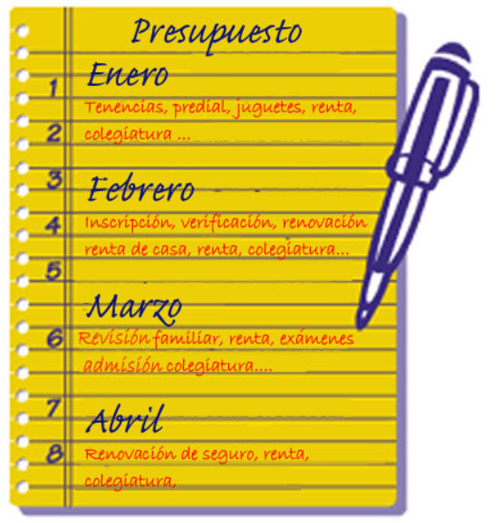

Aprendiendo a crear y modificar nuestro presupuesto
A veces surgen actividades o eventos inesperados en los que hay que realizar un gasto, pero más o menos sabemos cómo se comportan nuestros gastos y nuestros ingresos durante todo el año. Podemos analizar en qué época del año gastamos más o menos dinero y en qué época del año recibimos más o menos dinero. Realicemos una tabla donde identifiques las actividades que tienes durante el año.
Recuerda, hay que tomar en cuenta las actividades que son constantes, es decir, que casi siempre son las mismas todos los años, Al mismo tiempo, identifica las actividades que se presentan de vez en cuando, pero que sabes que se presentan.
Por ejemplo, en el caso de Vicente, la siguiente lista representa algunos de sus gastos contemplados en los siguientes meses:
Teniendo un análisis del comportamiento de nuestras actividades podemos desarrollar un presupuesto más exacto y tener una idea más clara sobre cómo van a estar nuestros ingresos y gastos.